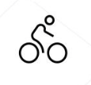
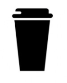
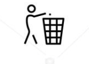
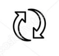

@ Going Out
Challenge 1
When you go out - do as the Dutch do: take the bike! Very healtthy for yourself and very healty for our planet. Ever if you have to travel a bit further - consider it as a nice exercise.

Challenge 2
Like takeaway coffee or grabbing a quick meal? Sound good, but it does produce a lot of extra waste. Therefore, bring your own cup or try to minimalise trash as much as possible.

Challenge 3
And if you produce trash, do you always throw it away in the trash can. Just do! It's so easy. And when full, take it home.

Challenge 4
The last Climate Challenge is entirely up to you! Be creative and think of what else you can do for the environment, Going Out, or @ Home, Work or Travel.

Copyright by MCB